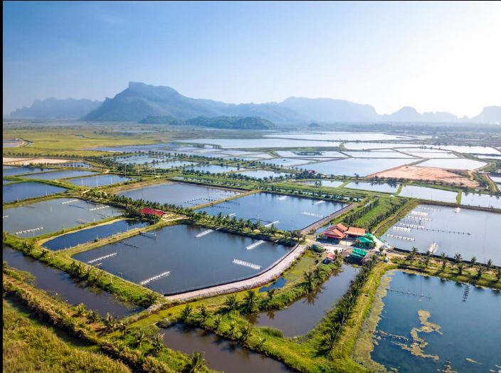

Smart Aquaculture Starts Here
AquaSmart is a location-based aquaculture recommendation system that helps fish farmers make informed decisions. Register your pond, check real-time weather for your area, and get rule-based fish species recommendations — all in one place.

Pond Registration
Record pond dimensions, water type, pH, and other quality parameters in a simple form.
Weather Dashboard
Get real-time temperature, humidity, rainfall, and weather conditions for your pond location.
Fish Recommendations
Receive rule-based fish species suggestions matched to your pond conditions and local weather.
Pond Management
Access practical suggestions for water-quality monitoring, feeding, and pond maintenance.
Pond Registration
Enter your pond details below. Fields marked with * are required.
Saved Ponds
No ponds saved yet. Fill in the form above and click "Save Pond Details".
Weather Dashboard
Enter a location to fetch real-time weather data for your aquaculture pond area.
Weather data will appear here after searching for a location.
Fish Recommendations
Select a saved pond to generate rule-based fish species recommendations based on pond conditions and current weather.
Recommendations will appear here. Save a pond in the Pond Registration section first.
Pond Management Suggestions
General best practices for maintaining a healthy aquaculture pond.
Water-Quality Monitoring
- Test pH weekly — ideal range is 6.5 to 8.5 for most freshwater species.
- Monitor dissolved oxygen; levels below 4 mg/L stress fish and can cause mortality.
- Check ammonia and nitrite levels every 1–2 weeks.
- Maintain water transparency between 25–40 cm using a Secchi disc.
- Record all readings in a logbook to track trends over time.
Pond Maintenance
- Remove aquatic weeds regularly to prevent oxygen depletion.
- Apply lime (CaO) to pond bottom during preparation to balance pH.
- Check and repair pond embankments and inlet/outlet structures monthly.
- Drain and dry the pond once a year to eliminate parasites and diseases.
- Ensure pond depth is maintained between 1.5–3.0 metres for optimal fish health.
Weather Monitoring
- Check weather forecasts daily; heavy rainfall can alter pH and salinity suddenly.
- Increase aeration during hot, humid days when dissolved oxygen drops.
- Avoid feeding before or during thunderstorms to prevent waste accumulation.
- Prepare for flooding by reinforcing embankments during monsoon season.
- Reduce stocking density during peak summer to lower oxygen demand.
Feeding Practices
- Feed fish at the same time and place each day for consistency.
- Provide feed at 3–5% of body weight per day, divided into 2–3 feedings.
- Use floating pellets to monitor consumption and avoid overfeeding.
- Stop feeding if fish show signs of disease or if water quality deteriorates.
- Adjust feed quantity based on seasonal temperature and fish growth stage.
Consulting Experts
- Consult local fisheries department officers for species selection and disease advice.
- Contact a veterinarian immediately if fish show abnormal behaviour or lesions.
- Join local aquaculture cooperatives to share knowledge and resources.
- Attend training programs offered by Krishi Vigyan Kendras (KVKs).
- AquaSmart provides preliminary recommendations — always verify with experts before stocking.